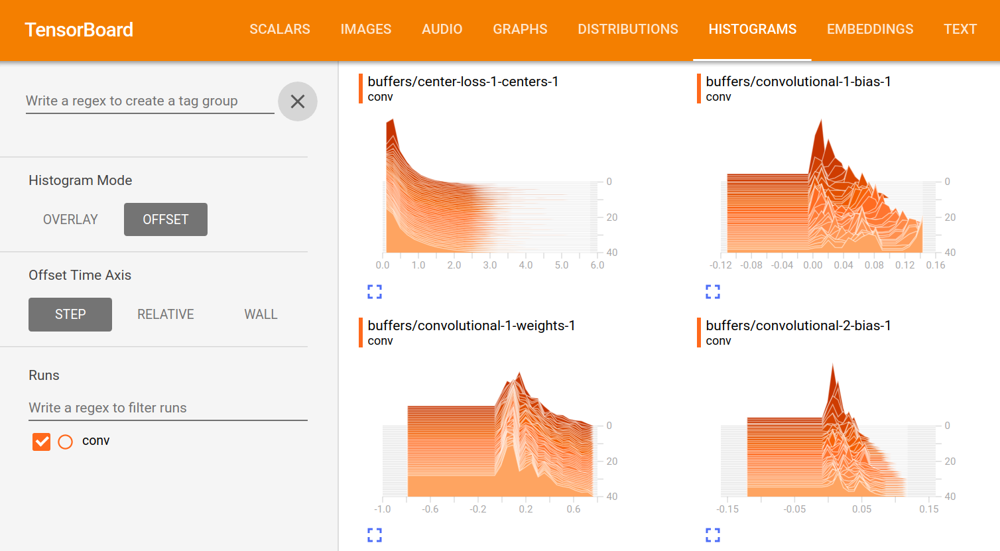

Deep learning with Cortex
Kiran Karkera
Datacraft Sciences
Outline
Context: Machine Learning
Overview of Cortex
Example of building networks
Recipes
What is Machine Learning
Supervised Classification:

Why are Neural Networks popular for classification?
State of the art performance
One of the early successes(1992) for neural nets was reading the zip code in postal mail.

99.81% accuracy on MNIST, close to or better than human performance
Flexibility
Neural Nets can accommodate several outputs:
Single target classification (e.g. Spam classification)
Multi target classification (e.g multiple objects in an image)

Composability
Different layers can be combined in a modular fashion and computations are straightforward

Features of Cortex
Deep learning library written in Clojure
Data centric interface
Performant, Memory efficient training on GPUs
Supports Convolutional NNs (image processing)
Partial support for ingesting pre-trained networks
Abstraction layers for CUDA / CPU
- Enables some level of shared implementation between a Cpu, Cuda, OpenCL
Cortex Examples
Predicting office room occupancy
Train with 8k instances
Contains measurements of light, temperature, humidity and CO2 of an office room.
Goal is to predict when the room is occupied.

Data ingestion
(def data-vectors (->> "resources/occupancy/datatraining.csv" (slurp) ;; parse lines and process (mapv make-feature-vectors) )) (take 1 data-vectors)
({:data [22.15 27.245 0.0 586.5 0.0044959713579516], :labels [0.0]})
Define the layers
Network is defined as a vector of layers
Input layer take 3 arguments, the x y z dimensions of a cube
Input layer for room occupancy is 5(inputs) x 1 x 1
(layers/input 5 1 1 :id :data)
{:data [22.15 27.245 0.0 586.5 0.0044959713579516], :labels [0.0]}
Network definition
(def description [(layers/input 5 1 1 :id :data) (layers/batch-normalization) (layers/linear 1) (layers/logistic :id :labels)])

Training
Train it for 10 epochs
One epoch == One pass on the dataset
(def trained-occupancy-net (let [[train-ds test-ds] train-test-ds] (train-n description train-ds test-ds :epoch-count 10 )))
| :type | :value | :lambda | :node-id | :argument | |-----------+---------------------+---------+----------+-----------| | :mse-loss | 0.03046061750823965 | 1.0 | :labels | | Loss for epoch 10: (current) 0.03046062 (best) 0.03308501 [new best]
Evaluate results
Evaluate the accuracy (and other metrics) on the test set
(accuracy actual predicted)
0.9447852760736196
Recognizing hand-written digits

Image of size 28 (length) x 28 (breadth) x 3 (depth)
Network definition
Input layer for an image of size 28 (length) x 28 (breadth) x 1 (depth)
(layers/input 28 28 1 :id :data)
(defn mnist-initial-description [input-w input-h num-classes] [(layers/input input-w input-h 1 :id :data) (layers/convolutional 5 0 1 20) (layers/max-pooling 2 0 2) (layers/relu) (layers/convolutional 5 0 1 50) (layers/max-pooling 2 0 2) (layers/batch-normalization) (layers/linear 1000) (layers/relu) (layers/dropout 0.5) (layers/linear num-classes) (layers/softmax :id :labels)])
Training progress



Backpropagation

Artifacts
Forward pass
Backward pass
Accuracy / Loss function
Gradient
How to train neural networks (theory)
(Learn by) writing a toy implementation of back propagation
Stack up layers like Lego blocks
Sip your coffee and watch the loss function decrease

Reality
" The problem with Backpropagation is that it is a leaky abstraction." -Andrej Karpathy

Figure 14: A heart rate or a loss function? :)
Figure 15: Evades diagnosis
Check out this page for artistic loss functions

Debug-ability is crucial

Swanky UIs are common
Swanky REPL are not
“Any Product That Needs a Manual to Work Is Broken” – Elon Musk
Neural nets and functional programming
Pure functions
(layer inputs)
Reduce
(reduce (fn[last-output layer] (layer last-output)) input [layer1 layer2 layer3])
Iterate
(iterate train-fn initial-network)
REPL driven development
Querying network properties
What are the layers in the network
(-> occupancy-net :compute-graph :nodes keys)
(:data :batch-normalization-1 :linear-1 :labels :mse-loss-1)
How are layers connected
(-> occupancy-net :compute-graph :edges)
([:data :batch-normalization-1] [:batch-normalization-1 :linear-1] [:linear-1 :labels] [:labels :mse-loss-1])
Examine weights per layer
(defn mnist-initial-description [input-w input-h num-classes] [(layers/input input-w input-h 1 :id :data) (layers/convolutional 5 0 1 20) (layers/max-pooling 2 0 2) (layers/relu) (layers/convolutional 5 0 1 50) (layers/max-pooling 2 0 2) (layers/batch-normalization) (layers/linear 1000) (layers/relu) (layers/dropout 0.5) (layers/linear num-classes) (layers/softmax :id :labels)]) (def mnist (mnist-initial-description 28 28 10))
(network/print-layer-summary mnist-net (traverse/training-traversal mnist-net))
| :type | :input | :output | :bias | :weights |
|---|---|---|---|---|
| :linear | 50x4x4 - 800 | 1x1x1000 - 1000 | [1000] | [1000 800] |
| :relu | 1x1x1000 - 1000 | 1x1x1000 - 1000 | ||
| :dropout | 1x1x1000 - 1000 | 1x1x1000 - 1000 | ||
| :linear | 1x1x1000 - 1000 | 1x1x10 - 10 | [10] | [10 1000] |
Parameter count: 849780

Visualize the output of a hidden layer
Exploring the Swish activation function
Remove the penultimate layer (labels) and pass a range of inputs
(-> network :compute-graph :nodes keys)
(:data :batch-normalization-1 :swish-1 :labels :mse-loss-1)
(let [network-minus-head (network/dissoc-layers-from-network network :labels)] (execute/run network-minus-head input-data))
Compare Swish with Tanh and Logistic layers
Training
(def trained-net (let [[train-ds test-ds] (get-ds) train-fn #(etrain/train-n % train-ds test-ds)] (->> network (iterate train-fn) (take 10))))
Returns a sequence with 10 iterations of trained network
(->> trained-net (mapv :cv-loss))
[nil 2.2406814049004633 2.1851172560486454 2.1851172560486454 2.1851172560486454 2.1822464148167136 2.1734111466403503 2.1614423794394315 2.1614423794394315 2.1614423794394315]
Check how weights change over epochs
(-> network :compute-graph :buffers :convolutional-2-weights-1 :buffer)

Listeners
Save the best model/kill training
Broadcast events at key milestones
Summary
How you could help Cortex grow
Support for Recurrent networks (e.g. text)
Java based alternative is Deeplearning4j
Recent network structures (e.g. Inception / Capsule networks).
Ingesting pre-trained networks
Automatic differentiation
Thanks
Chris Nuernberger and the Thinktopic team
Mike Anderson
Notebook link : https://goo.gl/jb8bEX
References
- Clojure Data Science.com
- Office occupancy picture

- room occupancy dataset